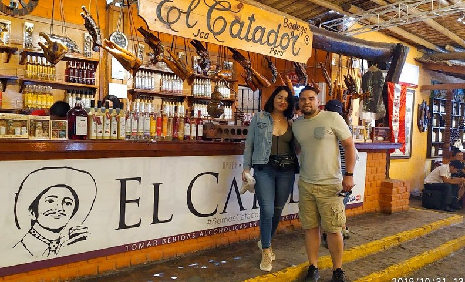
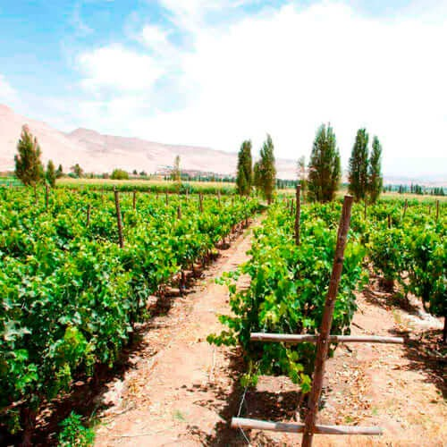
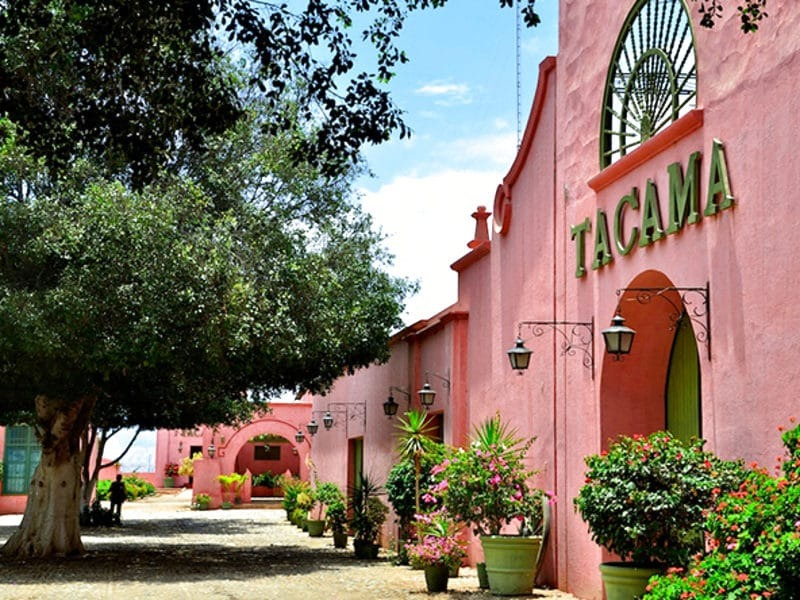
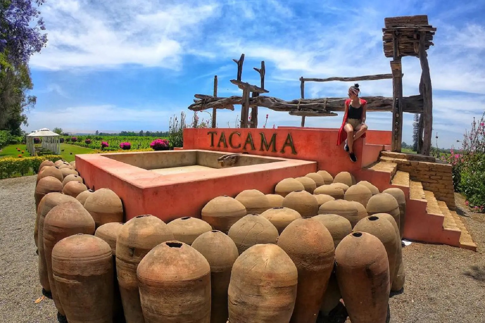

Detalles del Tour
Conoce la esencia de nuestra región visitando las bodegas vitivinícolas más prestigiosas y antiguas de Ica. Aprenderemos sobre el proceso tradicional e industrial de la elaboración del Pisco y el vino. El tour finaliza con una divertida cata (degustación) guiada por expertos sumilleres locales.
Galería de Imágenes




Comentarios de Viajeros
Roberto Castro
La degustación fue excelente, nos hicieron probar como 6 tipos distintos de piscos y cremas. El ambiente es espectacular.
Ana Mendoza
Muy interesante conocer la historia de los viñedos. Aprovechamos para comprar vinos a muy buen precio.